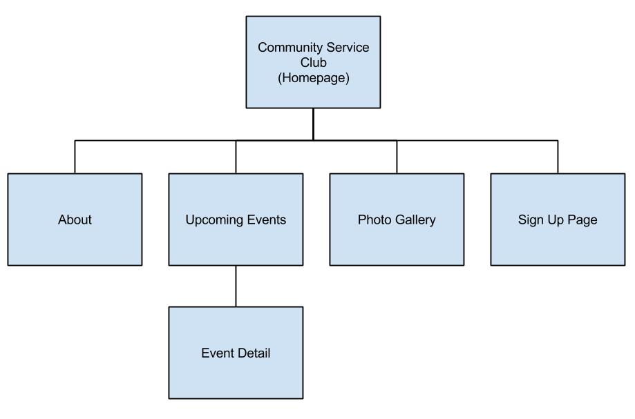
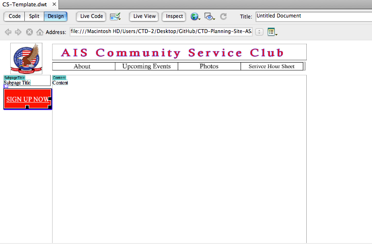
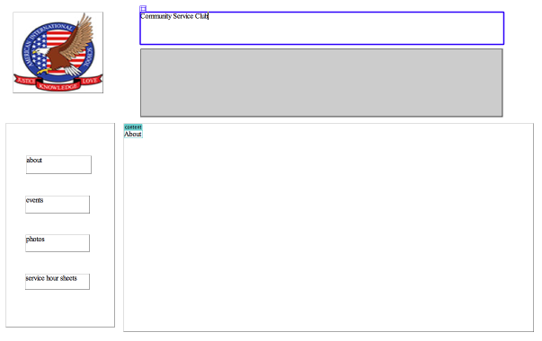

Making Subpages
Then, we are going to crate subpages such as about page, events page, and photo gallery page.
Before that, let's go over the objectives and the flowchart.
Objectives
- For the highschool students in AIS to sign up the events
- For the students in AIS to see the detail of upcoming volunteer events
- For the Community Service Club to use this website in future
Flowchart

Based on the objectives and the flowchart, the subpages we will create are:
- About
- Upcoming Events
- Photos
- Service Hour Sheet
Wireframe
We first made some wireframes to plan what subpage is going to be like
Red - Fixed region
Green - Editable region

Template
Then, I started creating template in Dreamweaver. We can use this template to make subpages.


Subpages
We separated the roles in the group by pages. I am going to create the photo gallery page.
Feedback
I got some feedback from Ashley about my homepage. I did not put any subpage links at this time.
- Add subpages
- "SIGN UP NOW" is too large
- Left sidebar should be little larger